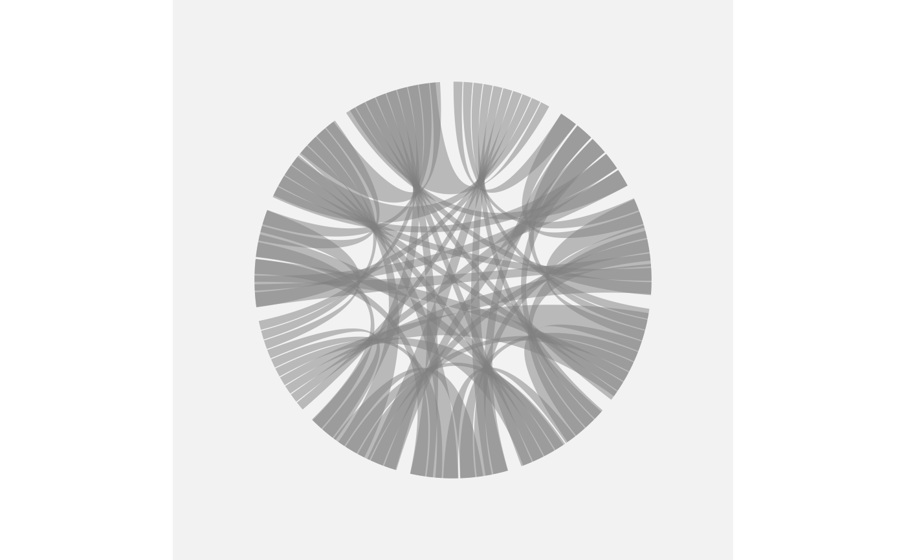

The default theme of a circular plot: no grid, no axes, sensible margins
and a legend on the right. Layer on top of it with + theme() as usual.
Usage
theme_circos(
bgcolor = "white",
grid = FALSE,
axis = FALSE,
legend.position = "right",
margin = 10
)Arguments
- bgcolor
Panel background colour. The panel is painted, not left transparent, so that
bgcolor = "white"really is white –theme_void()blanks the elements, it does not fill them.- grid
Keep the panel grid? With a circular coordinate these are the polar elements
panel.grid.*.theta/panel.grid.*.r, not cartesian.x/.y.- axis
Keep the axes? With a circular coordinate these are
axis.text.theta,axis.line.theta,axis.ticks.theta.- legend.position
Legend placement, passed to
ggplot2::theme().- margin
Plot margin, in points.
Examples
ggcircos(cor(mtcars), order = "hclust") +
geom_chord() +
theme_circos(bgcolor = "grey95")
